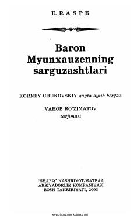

BMBaron Myunxauzenning aql bovar qilmaydigan qiziqarli va fantastik sarguzashtlari.
Kitob XVIII asrda Germaniyada yashagan baron Myunxauzenning aql bovar qilmaydigan fantastik sarguzashtlari va qiziqarli hikoyalaridan iborat. Asarni Korney Chukovskiy qayta hikoya qilgan bo'lib, Vahob Ro'zimatov o'zbek tiliga tarjima qilgan. Unda qahramonning o'ziga xos sarguzashtlari hajviy va qiziqarli tarzda bayon etilgan.